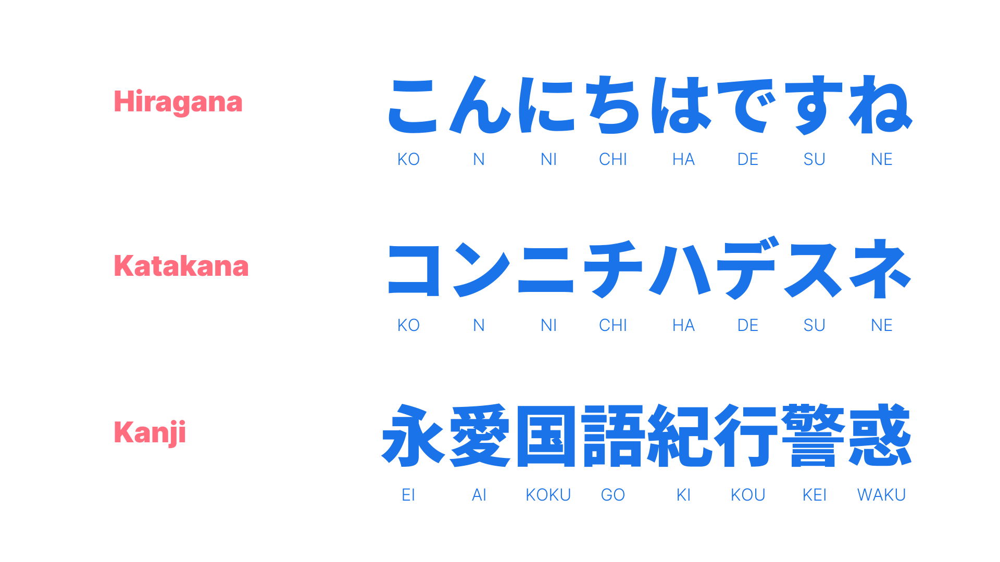
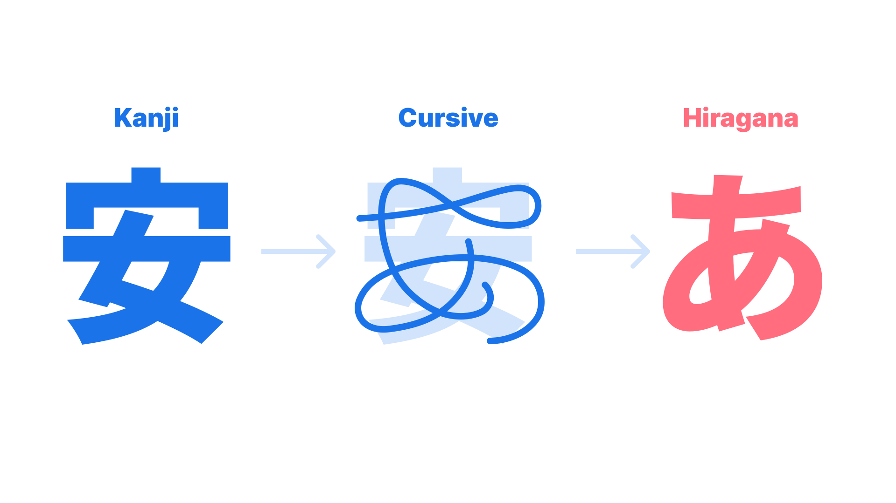
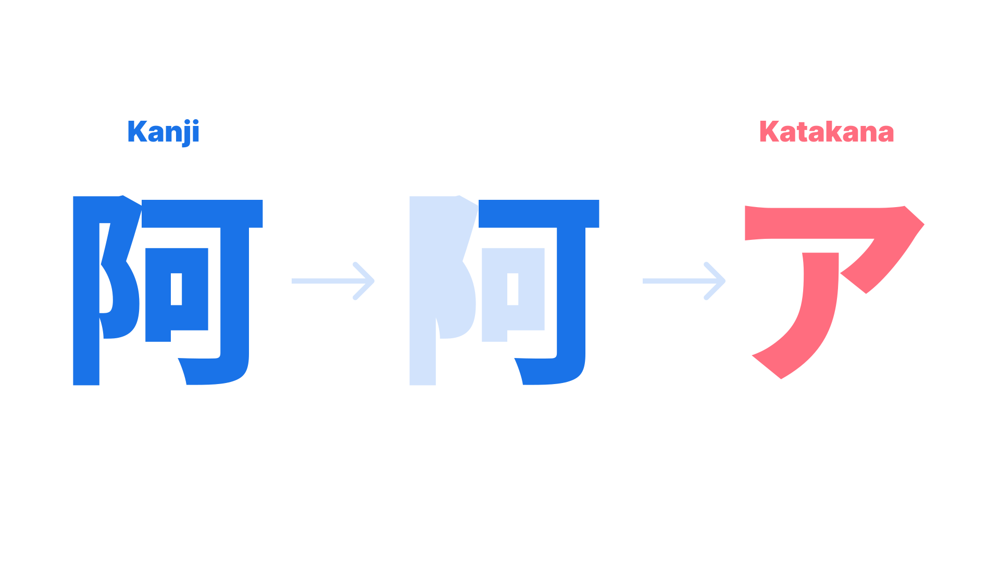
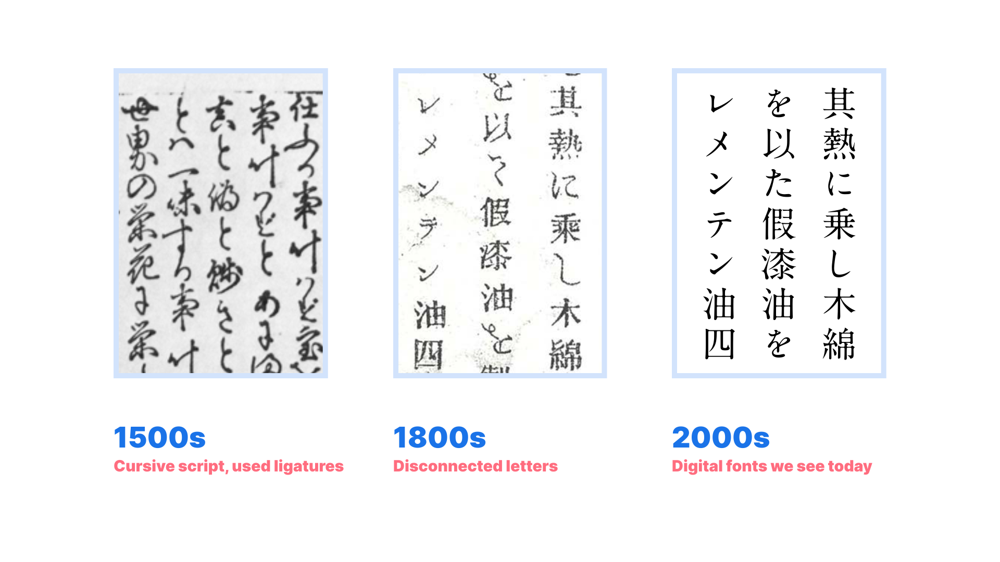
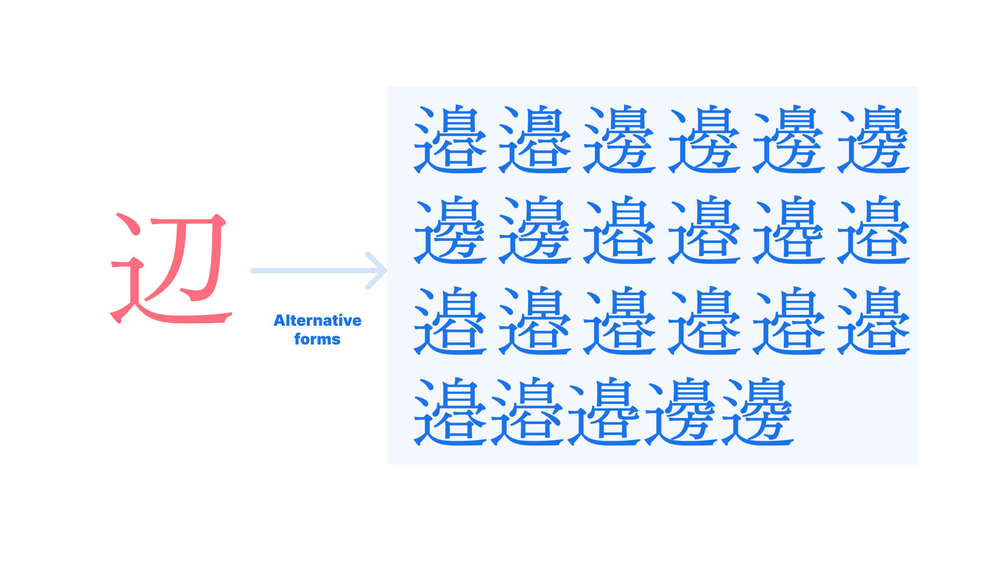
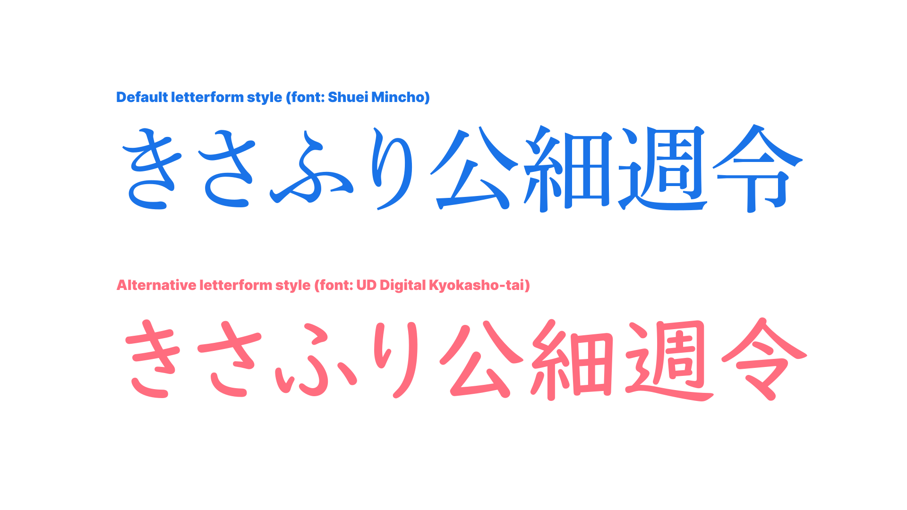
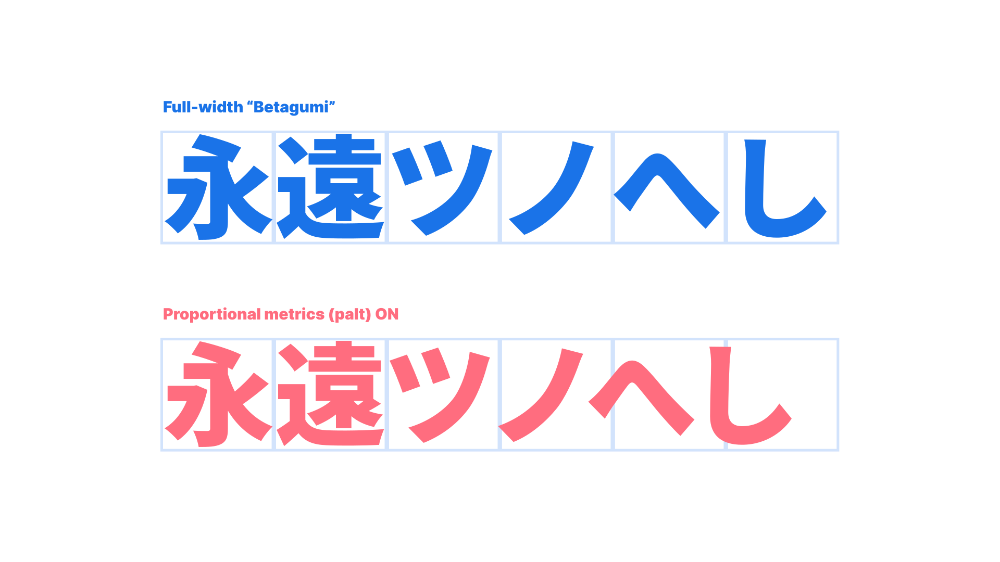

Japanese typography basics
By Min-Young Kim · Google Fonts Knowledge.
Reviewed by Lisa Huang, Minjoo Ham, Shoko Mugikura.
Original article · Source on GitHub · CC BY-SA 4.0. Text, illustrations and existing credits reproduced from the licensed Knowledge repository. Open Shelf adapted the layout and links; these adaptations are also CC BY-SA 4.0. No endorsement implied.
A lot of writing systems in the world use one script per language. But that’s not the case in Japan: When you write a sentence in Japanese, three different scripts can be used: Hiragana, Katakana, and Kanji, a Japanified version of Chinese characters. And if you’re trying to develop a Japanese typeface, you also need to include the Latin alphabet and figures, too. Japanese is the only script among CJK that uses multiple scripts to form its language.
So how did it become such a melting pot of scripts? And what kind of unique aspects does Japanese have?

Development of Kana
Hundreds of years ago, Japan used Chinese characters to communicate in written form, as did many other Asian countries. Some time around the 8th century, Japan started to use a Japanified version of Chinese characters, which is now called Kanji. In some cases, Chinese characters were converted into a Japanese sound, and in others, Kanji was used as an ideogram to communicate the context. Around the 9th century, Hiragana and Katakana were invented. Together, they are called Kana.
Hiragana is a simplified version of Kanji—it uses simple curvy lines to write Kanji easier. It started as a cursive script of Kanji and later became the Hiragana letterform we use now. It was initially developed and used by women, because, at the time, many Japanese women didn’t have the opportunity for education. And no women were allowed to work in official positions, which required the use of Kanji-based writing. Hiragana was a huge creative development and grew in popularity, regardless of gender and social status. It is now a main script for Japanese.

Katakana, on the other hand, was developed in a different way. It’s an alternative form of Hiragana and in modern times it’s often used to write foreign words. Katakana is also a simpler form of Kanji, but the difference from Hiragana is that while Hiragana simplifies the whole Kanji, Katakana takes only a part of Kanji to form a new character.
Katakana was created by monks—they needed an easier and less packed form of letters for their scriptures to write Ruby next to Kanji.

Why use Chinese characters, or “Kanji”, in Japan?
In Korea, the use of Chinese characters is fading away; most people only use Hangeul. So why does Japan still use Kanji?
The important thing we must not forget is that Hiragana and Katakana are phonograms, and Kanji is an ideogram. Japanese words have many homonyms—words that sounds the same but mean completely different things—so, by using Kanji, it helps a lot in avoiding miscommunication. Also, Japanese doesn’t have a word spacing system, so without Kanji, it would be very difficult to figure out where to cut the sentence. Also, by using Kanji in between, the sentence is much shorter.
Development of the letterform
Before metal typesetting, Japanese was written in a script style due to the use of pointed brushes. This meant that Hiragana was written in unbroken forms. In other words, every character was written connected, much like Latin calligraphy. When Japanese printers first started using the metal type in the 1500s, their Hiragana types had two or more characters together in a single block of type—much like Latin ligatures. In the 1800s, after the seclusion policy in Japan was lifted, they imported Chinese metal type, which had one letter on each block, and Japan adapted to this by developing disconnected Hiragana and Katakana that fit in the em square.

And there’s more: an alternative Kanji. Some of the Kanji characters have several slightly different forms for the same meaning, but different usage. Alternative Kanjis have many names—“old forms” and “new forms,” “Gakusan” (meaning for educational purpose), or systematic names given by JIS (Japanese Industrial Standards).
There are a couple of reasons for using alternative Kanji. As written above, Kanji and Kana had a long journey of transformation over centuries, and as we transfered from analog manuscript to incunable to phototypesetting to digital fonts, some Kanji characters were accidentally drawn incorrectly, or developed in a few different forms, which ended up with alternative Kanji. In this case, it’s mainly used for names of people or places. Some publications today prefer to use the old letterform alternative Kanji 辺, which has 23 alternative forms! (When using a font with Adobe-Japan 1-6 character set.)

Kanji letterforms in typefaces are not the same as their hand-written counterparts; the letterforms were simplified to make them fit metal type designs. This means that Kanji typefaces are not ideal for learning the anatomy of Kanji—especially for beginners. To resolve this, the Japanese ministry of education provides guidelines to follow an alternative letterform, and this also includes very few Kana. These alternative letterforms, sometimes called as Gakusan style, are designed with brush-like elements and expressions, known as a humanist style in Latin. These design details allow readers to see more familiar Kanji forms and may enable children to learn Kanji more easily.

Tsume and Proportional Metrics (palt)
Although Japanese fonts are designed full-width, some characters inevitably end up having more whitespace on both sides of the letter. This is because Japanese Kana used to be written vertically, so both the letter width and height varied. Therefore, when typesetting, especially in the narrow textbox, the line would appear jagged due to the inconsistent whitespace. To resolve this problem, Japanese typography uses its own setting called Tsume, or Proportional Metrics (palt in OpenType), instead of tracking or kerning.

Tsume enables the font to tighten its typesetting. The difference between Tsume and kerning is that Tsume shrinks the whitespace on both sides of the letter, while kerning adjusts the spacing between two letters. Tsume values are defined by the type designer when designing the font; users can’t set their own value. Some Japanese type foundries are updating their flagship fonts with Japanese kerning values in addition to the Tsume. Tracking is rarely used. “Betagumi” typesetting is also very popular—it means block typesetting, with no Tsume or kerning.